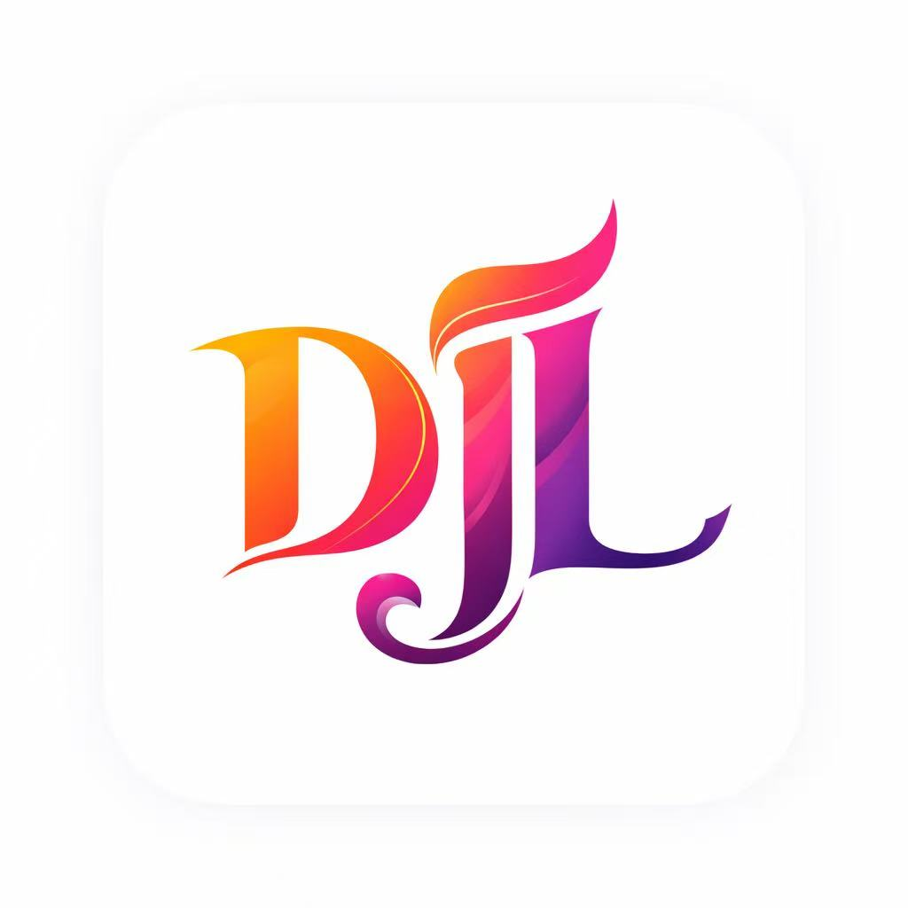

Lightweight desktop accounting software for macOS built for freelancers, small businesses, and entrepreneurs. Simple double-entry bookkeeping, invoicing, AR/AP tracking, and financial reporting — all stored locally.
Create journal entries and maintain accurate ledgers with a simple, focused desktop workflow.
Manage invoices, receivables, and payables in one place without the complexity of enterprise systems.
Review income statement, balance sheet, cash flow, and other core accounting summaries.
Your accounting data stays on your Mac. No cloud dependency. No forced subscription workflow.
Native desktop accounting software designed for speed, simplicity, and privacy — ideal for solo operators and small businesses who want local control.